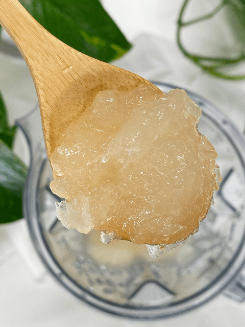

Kelp Noodle Paste, Substitute for Irish Moss
Irish moss has been the go-to ingredient to create a fluffy, gelatinous-like consistency in raw recipes. But it has been put under the microscope, and there is much discussion about whether it is safe to eat or not. I have read equal amounts of information arguing both sides of this controversy. So, when in doubt… fade-it-out or at least come up with a similar alternative. Raw kelp noodles!

Sea Vegetable
Raw Kelp Noodles are a sea vegetable in the form of a raw noodle. Made of only kelp (a sea vegetable), sodium alginate (sodium salt extracted from a brown seaweed), and water.
They are fat-free, gluten-free, and very low in carbohydrates and calories. They contain a trace mineral and essential nutrient, iodine, which plays a crucial role in metabolism and thyroid function. Inadequate iodine intake can lead to thyroid problems, such as hypothyroidism.
No Exact Science
Creating kelp paste is not going to be an exact science. When you blend the noodles to create the paste, the amount of water you use during that process will affect the gelling effect that the end product will produce.
The measurement that I listed below creates the perfect consistency for thickening puddings and smoothies, for example. The less water that you can get by with, the thicker and more set-up it will become, making it great for breads, cakes, and cheesecakes. It gives a recipe body, acts as a thickener, and adds excellent nutrients.
Soaking Process
With the soaking process and the length that it was soaked, I couldn’t detect any smell or taste from the paste, which was very exciting. I am going to share a little funny, freak out moment that I had while creating this recipe. Whenever I develop recipes, my laptop comes into the kitchen with me. I learned years ago ALWAYS to write a recipe down as I go, even if it is going to be “haphazard” one because those usually always turn out to be the best.
Anyway, I was fussing with the noodles, going back and forth between the counter, blender, computer, blender, computer, and so forth. Well, a few hours later, when I sat down with my laptop… I jumped, yipped, and covered my eyes. There was a WORM on my computer screen!!! A WORM!!! Shiver-me-timbers… Without my husband home to save the day, I had to deal with the worm myself. I got up and grabbed a paper towel. Feeling that I was safe enough to where the darn thing wouldn’t jump on me (hey you never know, they might jump hehe), I inched my nose in closer to check it out. Closer, closer, closer… kelp noodle! Lol Not a worm, but a translucent kelp noodle clinging for its very life on my computer screen. It gave me a good chuckle, that’s for sure.
I am going to show you two different ways to soften the noodles; you can decide which means you are comfortable with. The method using the baking soda produces the smoothes texture. Enjoy and many blessings, amie sue

Ingredients:
Yields 2 1/4 cups
Option 1
- 1 bag kelp noodles (12oz bag)
- 2 tsp baking soda
- 1/2 lemon, juiced
Option 2
- 1 bag kelp noodles
- 1/4 cup lemon juice, for soaking
- Soak water
- 3/4 cup water – blending
Preparation:
Option 1
- Drain, rinse and place the noodles in a medium-sized bowl.
- In a small bowl, stir together 2 tsp baking soda and lemon juice. It will foam up; this is a normal reaction.
- Add this to kelp noodles along with enough water to cover the noodles and let them sit for at least 15 minutes.
Option 2
- Remove the noodles from the bag, rinse them, and place them in a large bowl with 1/4 cup lemon juice and enough water to cover them and about an inch extra. Cover and leave on the countertop.
- Soak overnight or at least 8 hours, which will help to remove the smell of seaweed.
- Rinse the noodles and place them in a high-speed blender (Vitamin or Blendtec). Add enough water to get the blades moving.
- You can control how thick you want the paste to be. Add more or less water to reach the consistency you want.
- Stop the blender occasionally and test for a grainy feel and to scrape the sides of the blender jar down. If you feel little bits, keep blending till creamy and smooth.
- Store in an airtight container in the fridge for 2-3 weeks.
- Have fun experimenting :)
© AmieSue.com